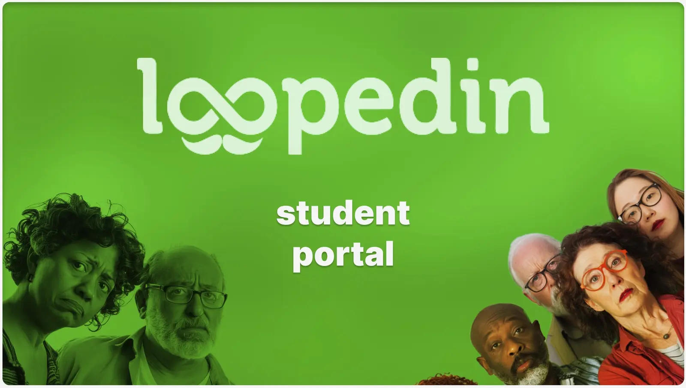
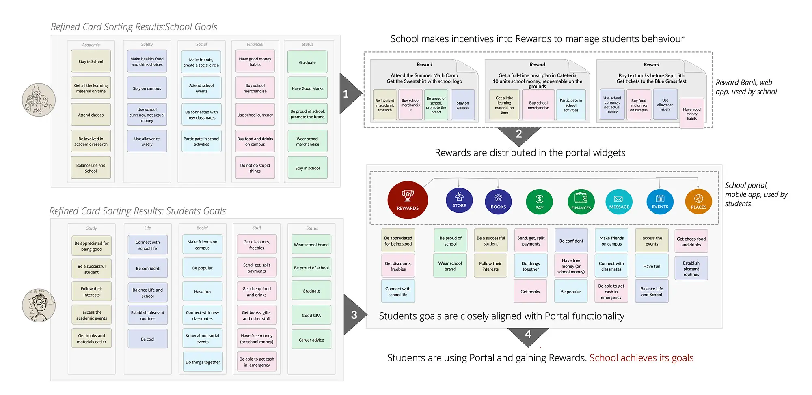
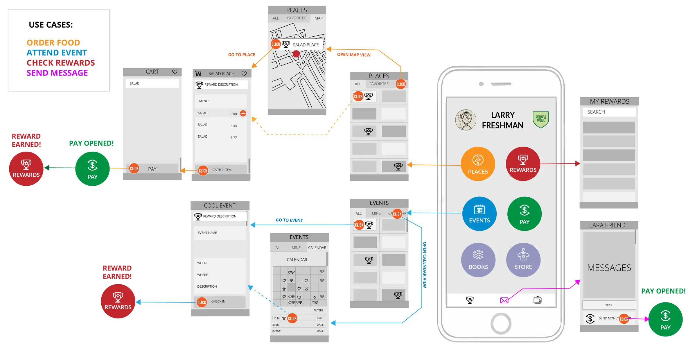
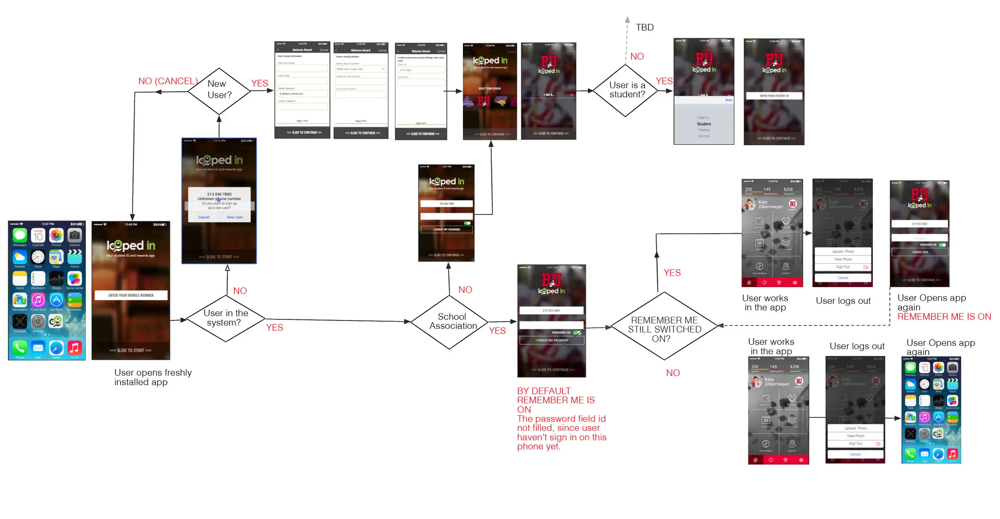
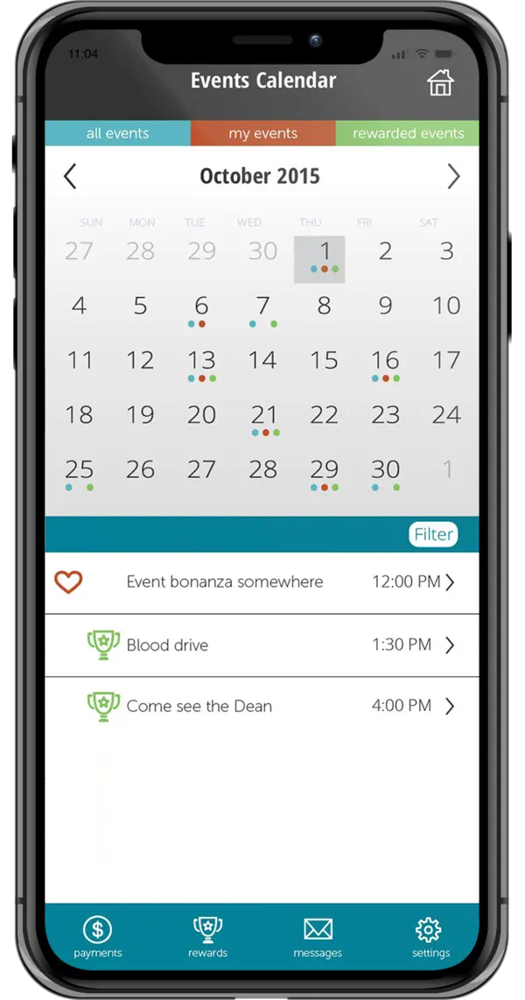
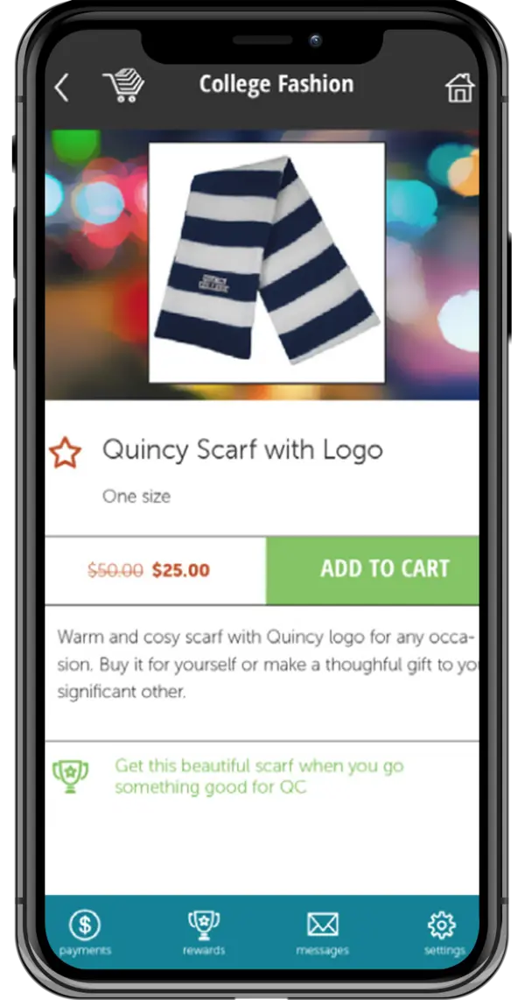
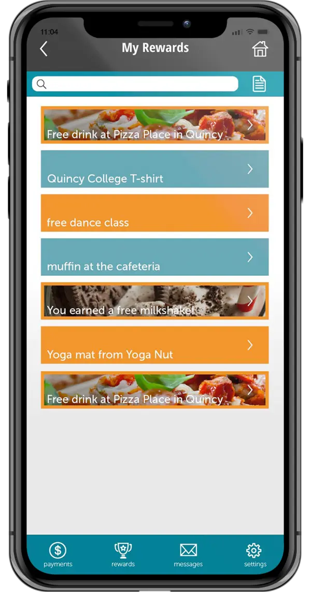
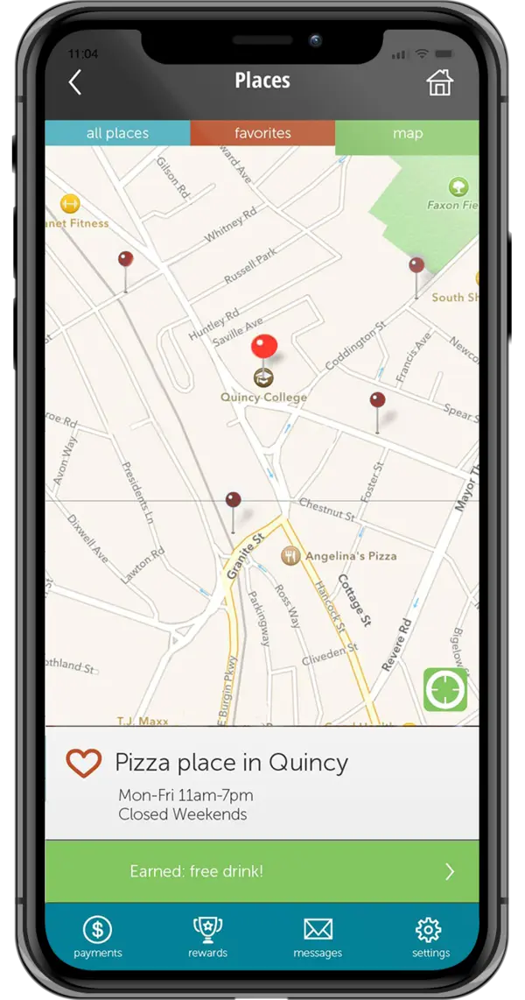
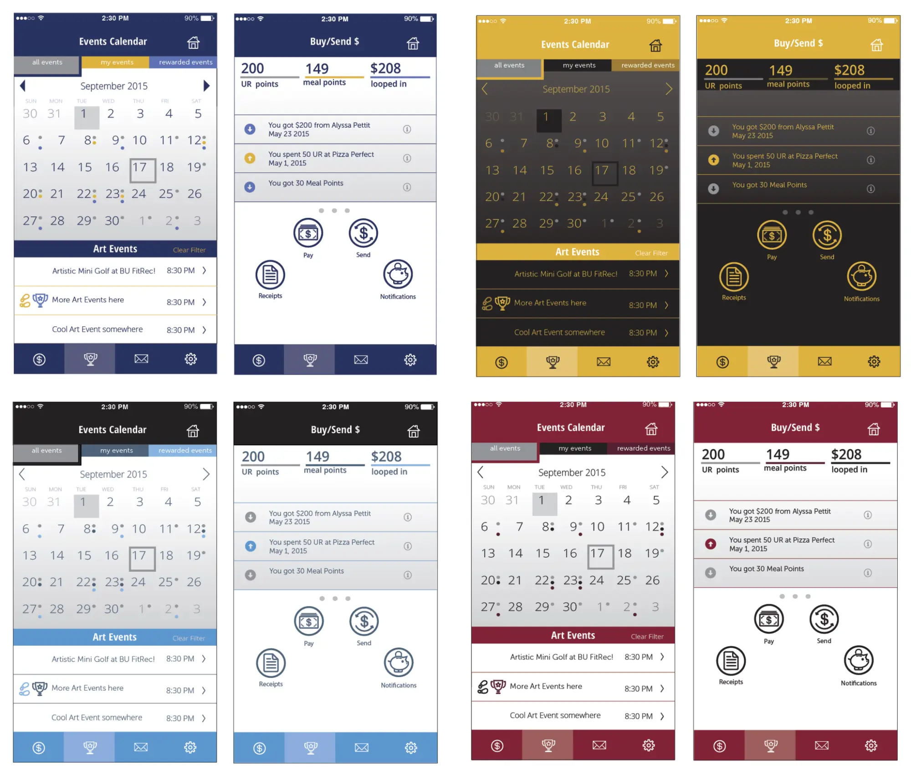
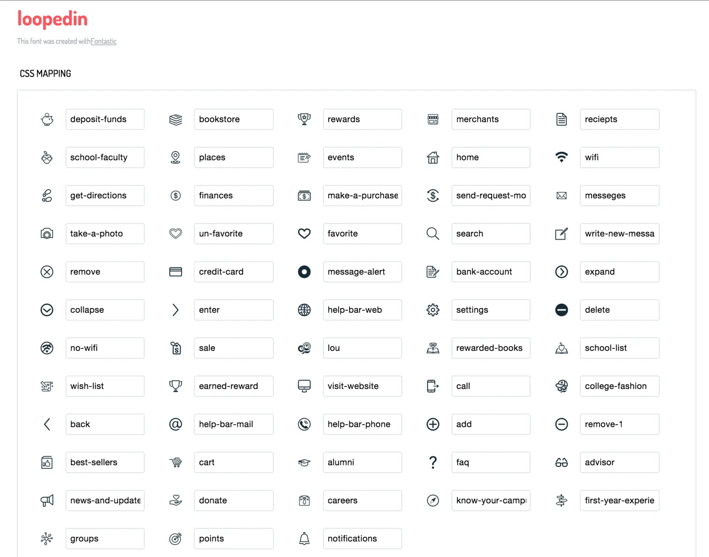

Looped In student portal
- Role
- UX and UI Designer, Design Manager
- Scope
- Discovery, journeys, UI system; 2026 rebuild
- Highlights
- 222 screens · 3 college skins · Rebuilt with AI
What exactly I did
Situation
Rewards as a reason to stay
A startup wanted to keep students in college by rewarding the habits that help them stay: going to events, eating well, showing up.
Situation
Rewards as a reason to stay
A startup wanted to keep students in college by rewarding the habits that help them stay: going to events, eating well, showing up.
Keep students in college by changing what they do on campus.
LoopedIn, a 2015 startup, built a student app on one idea: the faculty pick the habits they want, like going to events or eating well, and students earn rewards for them.

Four groups, one loop
Discovery mapped what the school wants against what students want, and put parents, faculty, students and local vendors in the same loop, with rewards from the school and from local businesses.

Task
Six daily jobs, one app, any school
Pay, send money, events, rewards, books and places, branded for each college that buys it.
Task
Six daily jobs, one app, any school
Pay, send money, events, rewards, books and places, branded for each college that buys it.
One app had to do six jobs a student does every day: pay, send money, find events, get rewards, buy books, find places to eat. And it had to look like each school that bought it, not like a vendor.


Action
Rewards woven through everything
Rewards inside every feature, and a skin system so each school sees its own app.
Action
Rewards woven through everything
Rewards inside every feature, and a skin system so each school sees its own app.




Rewards everywhere, not in a corner
Rewards ran through every feature instead of living on their own tab. The calendar marks rewarded events, the campus store tells you what earns points, and the map shows where your free drink is waiting. The school can promote exactly the events it needs students to attend.
One app, any school
Each college chooses its widgets, menu, colors and main graphics. We made a custom icon font for the shared actions and the school-specific ones, and color presets so a school picks a set instead of designing one.


Result
Back to life in 2026
Open prototypeAll 222 screens rebuilt as a working prototype, with a wireflows explorer at the top of this page.
Result
Back to life in 2026
All 222 screens rebuilt as a working prototype, with a wireflows explorer at the top of this page.
In 2026 I brought the project back from its source files. All 222 screens became a working prototype, with real forms and controls in place of flat pictures, and a college selector that reskins the whole app. Then I built a wireflows explorer to walk through it: open a journey, expand a step, and run the real screen next to it. It’s at the top of this page.
The rebuild kept the original copy and look, but fixed what 2015 got wrong: bigger text, consistent margins, real feedback when a PIN doesn’t match, and controls a screen reader can name. An automated sweep is not a certification; the remaining manual checks are written down.